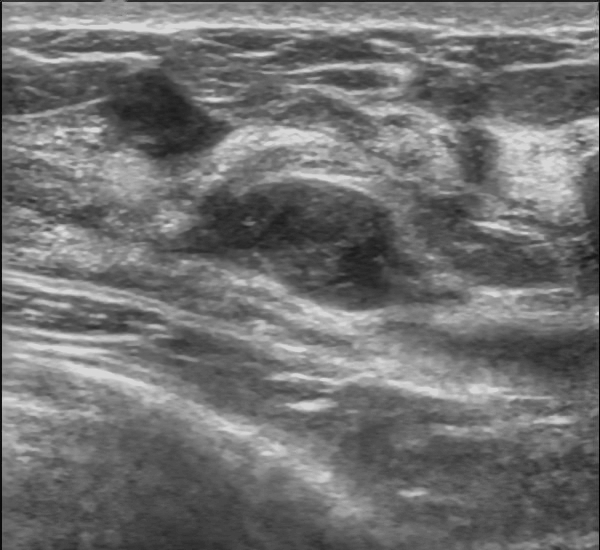

Ficha del catálogo
Fibroadenoma
- Sistema
- Mama
- Modalidad
- US
- Región
- Mama
- Dificultad
- Básico
Es el tumor benigno más frecuente de la mama, formado por proliferación de componentes epitelial y estromal del lobulillo. Aparece sobre todo en mujeres jóvenes y suele palparse como un nódulo móvil, firme e indoloro. Su comportamiento es hormonodependiente, por lo que puede crecer en el embarazo y regresar tras la menopausia.
Técnica
El ultrasonido con transductor lineal de alta frecuencia es la técnica inicial en la mujer joven por la elevada densidad del tejido mamario. Se explora en dos planos ortogonales documentando localización horaria y distancia al pezón. En mayores de cuarenta años se combina con mamografía en proyecciones craneocaudal y oblicua mediolateral.
Qué observar
- Forma ovalada con eje mayor paralelo a la piel
- Márgenes circunscritos y contorno liso o macrolobulado
- Ecogenicidad homogénea, habitualmente hipoecoica o isoecoica
- Ausencia de sombra acústica posterior significativa
- Vascularización escasa y ordenada en el Doppler
- Estabilidad respecto a estudios previos
Hallazgos
Se presenta como un nódulo sólido ovalado, de orientación paralela, bien circunscrito, homogéneamente hipoecoico y con refuerzo acústico posterior leve o transmisión sin cambios. En mamografía es una opacidad de bordes definidos que, al calcificarse con los años, adquiere el aspecto característico de palomita de maíz. En resonancia realza de forma progresiva y puede mostrar septos internos hipointensos que apoyan la benignidad.
Perlas
Los criterios ecográficos de benignidad no son absolutos: Un carcinoma de tipo medular o mucinoso puede mostrarse circunscrito y ovalado, por lo que un nódulo nuevo o con crecimiento documentado en una paciente mayor de treinta y cinco años merece biopsia aunque parezca típico.
Diagnóstico diferencial
- Quiste simple
- Es anecoico, con pared imperceptible y marcado refuerzo posterior, sin vascularización interna.
- Tumor filodes
- Suele ser mayor, de crecimiento rápido, con hendiduras internas quísticas y contorno lobulado más irregular.
- Carcinoma circunscrito
- Presenta halo ecogénico, vascularización interna desordenada o crecimiento reciente documentado.
- Ganglio intramamario
- Tiene hilio graso ecogénico central con vaso hiliar en el Doppler y localización habitual en el cuadrante superoexterno.
Simuladores
- Lobulillo graso normal rodeado de tejido fibroglandular
- Ganglio intramamario con hilio poco visible
- Quiste complicado con contenido ecogénico homogéneo
Por modalidad
- TC
- No es la modalidad indicada y solo lo detecta de forma incidental sin caracterizarlo.
- US
- Diferencia sólido de quístico, define márgenes y orientación y guía la biopsia cuando es necesaria.
Protocolo
Ultrasonido con transductor lineal de doce megahercios o superior, foco a la profundidad de la lesión y ganancia ajustada para valorar correctamente los quistes. Se documenta en dos planos con medidas en tres dimensiones y se añade Doppler color. La elastografía puede aportar información complementaria sobre la rigidez.
Clasificación
Se emplea el sistema BI-RADS, que categoriza de 0 a 6 según la sospecha; un fibroadenoma de aspecto típico corresponde a la categoría 3 con probabilidad de malignidad menor al dos por ciento, y se sigue con controles a los seis, doce y veinticuatro meses. La confirmación histológica lo reclasifica a categoría 2.
Errores frecuentes
- Asumir benignidad en un nódulo nuevo de paciente mayor
- No comparar con estudios previos para documentar estabilidad
- Confundir un quiste complicado con nódulo sólido por ganancia excesiva

mama fibroadenoma nódulo benigno BI-RADS ultrasonido orientación paralela circunscrito